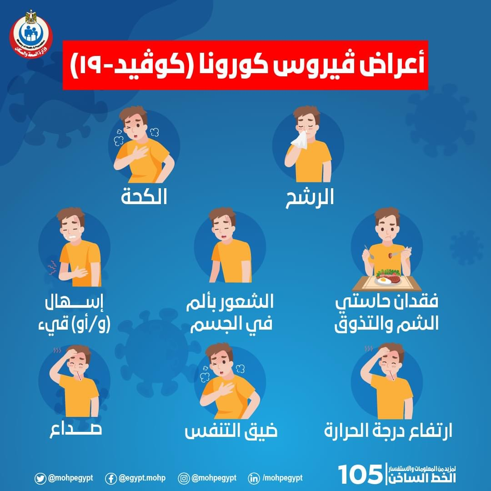

coronavirus
الأعراض يؤثر مرض كوفيد-19 في الأشخاص المختلفين بطرق مختلفة. ويعاني معظم الأشخاص الذين ي
صابون به أعراضًا طفيفة إلى متوسطة ويشفون من دون دخول المستشفى. الأعراض الأكثر شيوعًا: حمّى سعال جاف إرهاق
الأعراض الأقل شيوعًا: آلام وأوجاع التهاب الحلق إسهال التهاب الملتحمة صداع فقدان حاسة التذوق أو الشم طفح جلدي، أو تغير
في لون أصابع اليدين أو أصابع القدمين الأعراض الخطيرة: صعوبة أو ضيق في التنفس ألم أو ضغط في الصدر فقدان القدرة على الك
لام أو الحركة التمِس العناية الطبية الفورية إذا كنت تعاني أعراضًا خطيرة. واتصل دائمًا بالطبيب أو المرفق الصحي قبل التوجّه إليه. على
الأشخاص الذين يعانون أعراضًا طفيفة معالجة أعراضهم في المنزل حتى لو كانوا يتمتعون بصحة جيدة. يستغرق ظهور الأعراض في المت
وسط 5-6 أيام منذ إصابة الشخص بالفيروس، ولكن قد يستغرق ظهور الأعراض حتى 14 يومًا.
